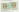
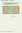
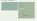
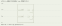
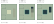
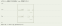
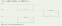
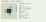

第12段階 修復・構造再設計
2026-11-12。修復ブランチは stage12-repair。修復前は stage12-development = 19f08e196e71f4188f430b84a3b2ee7daf4a1cc7、保存タグ stage12-before-repair、Sites保存版19で保全した。GitHub main、旧開発ブランチ、既存保存タグ、本編は変更しない。
この版は修復候補。実WebGLの描画・人間の一人称操作が未確認のため、依頼された完成判定は未完。 CPU上の設計・形状・衝突・入力歩行・搬送検証とは区別する。全225テスト、18搬送計画、45扉、泉への12歩行、24条件の面処理照合、81開閉状態の部材検査は成功した。
SH1・SH2の再設計と南側の実配置
旧版の裏側導入通路・南端の折返しを廃止。両搬送体を南側の同Zへ移し、P9の共用通路南口からSH1の半廊下北端へ直進して入る。SH1は店舗Aが西・半廊下が東、SH2は半廊下が西・店舗Bが東。店舗は各5.5×7.4m、半廊下は各2.2m。接合隙間0.4mを含む街路の公称幅は4.8m、実際の壁内法は約4.68m。
各店に奥壁・側壁・店先・カウンター・棚を設け、店先から店舗内へも歩ける。店舗裏に歩行用廊下を設けていない。中央の接合開口は長さ7m。北南の入口枠と接合シャッター枠が交差しないよう、端に0.5mの見切りを残す。中央への柱は置かない。
| 搬送体 | A/C | B |
|---|
| SH1 | X58.8・Y0・Z42 | X58.8・Y−12.8・Z42 |
| SH2 | X67.2・Y0・Z42 | X58.8・Y12.8・Z8.4 |
| LB1 | X66.8・Y0・Z50.4・90度 | X84・Y0・Z50.4・90度 |
SH1はBでもP9の南入口につながるよう第一層へ独立搬送する。SH2は従来どおりBで第三層の居住街へ接続。A/Cで再び同Zの街路となる。研究所は街路南端に入口を向け、内部の建築とロード型入退室を維持したまま90度の姿勢で搬送する。姿勢は全周期共通なので、新たな回転工程を増やさない。
外部からは居住区EVの第二層G5→J9→P9の共用通路→街路へ。U4東の旧開口は閉じる。U4から同一平面で迂回する構造を前提にしない。G5から街路までの三周期の通常コントローラ再生でも到達を確認した。
修復前平面 ／ 修復後平面と入口経路 ／ 分離時の各階。建築定義を先に変更して平面図を作り、その後にメッシュを修正した。最終図面は同じ建築データから再生成する。
搬送域は東へ広げず、すべて南へ16.8m拡張した。
| 範囲 | 旧寸法 | 修復後 |
|---|
| same | 134×50m | 134×66.8m |
| ring1 | 142.4×58.4m | 142.4×75.2m |
| ring2 | 150.8×66.8m | 150.8×83.6m |
Z50.4・58.8mの二列が増え、研究所がこの領域に実際に配置され、ABCで搬送する。空欄計算、経路探索、施設外周、地図の表示範囲も広げた。背景線を足しただけではない。正常な他の54搬送体のABC完成位置は変更しない。
AC1とAT0
旧接続Z3〜5mは北側住戸のZ0.8〜4.9mに重なっていた。AC1東口とAT0西口をZ6〜7.8mへ移し、住戸間の共用ホールに接続する。住戸の壁や扉を削って通路にする方式ではない。
入口の0.16m刻みの三段を廃止。最初の0.6mは外部と同じ平坦床、その先4.8mで0.48m上がる勾配1:10とした。平坦部は身体半径が接合床から完全に離れるまで上昇を始めないために必要。AT0の床下収納の高さは保つ。
共用ホール・住戸・入口勾配。歩行支持面と実際の閉じた勾配メッシュを同じ寸法から生成し、往復の高さを検査する。
壁抜けの原因と対処
旧版で、AT0の局所X4/Y0.16/Z4からX5.3へ、X4.6の閉じた住戸壁を横切ることを再現した。壁は実メッシュではY0.64〜4.04mだが、旧判定は足元が床基準0.48mより低いと壁を除外していた。さらに所有・支持判定の0.331m許容をプレイヤー中心にも使い、床より低い位置を通常の所有位置として受け入れていた。
プレイヤーの身体は足元の描画オフセット0.16mから高さ1.70mの円柱として扱い、その高さ帯と壁・扉・家具の高さ帯の重なりを判定する。空間索引も身体の高さ範囲で候補を集める。接触時の横滑りも同じ高さ判定を使用する。
中心の床所有判定と、足の周囲16点の支持判定を分離した。中心は実際の支持面付近に限り、周囲の支持には階段二段分までの許容を残す。昇段を壊さず、床より低い中心位置を受け入れない。
主な修正：collision-volume.js、simulation.js、spatial-index.js、contact-slide.js、atrium-physics.js。
階段停止の再現と修復
旧版Bで開放率0.99、下階段の局所X13.2/Y1.76/Z11.3から、通常の歩行とフレームtickで登った。2.5秒後も開放率0.995555…のまま、Z8.84で停止した。表示は四捨五入で100%だった。
原因は三つ重なっていた。ゲートの描画は98%で全開になり、衝突は100%未満なら閉鎖面を残した。加えて、展開終盤に近づいた人を広い占有領域で検出し、残りの展開を停止させていた。見た目が開いた場所で閉鎖判定を受け、その解除まで進まない状態だった。
旧版の再現記録。任意の再現は、保存タグがあるGit cloneで node scripts/reproduce-stage12-bugs.mjs。修復後の検証は旧タグなしのソースZIPでも実行できる。
ゲートを六つの小片に分け、階段上部の脇へ狭く折り畳む形に修復。開放時に階段沿いへ大きな板を残さない。床・天井・透明壁という既存の開閉方式は維持した。
atrium-gates.jsの同じ葉の座標を、描画・身体衝突・占有する可動範囲が参照する。階段継手と手すりが固定した後にゲートを開く。開放終盤はゲートの実際の可動範囲を検査し、通れる部分へ近づいただけで全体を停止させない。閉鎖時は人が可動範囲から自分で離れるまで待つ。100%表示は内部状態が完了した場合に限る。
各40段の二本の階段という構成は維持。新しい連続歩行テストは、AC1→入口勾配→AT0→第一階段→中間段北の踊り場→東側通路→第二階段→AT2を通り、同じ経路で戻る。各階の途中で座標や高さを置き直さず、通常歩行とShiftの両方で検査する。99%から歩き始める旧不具合の再現条件も別に検査する。
主な修正：atrium-physics.js、atrium-gates.js、atrium-view.js。ゲートの小片には積み重ねる厚みを確保し、開閉各姿勢の同法線重複面も検査する。
吹き抜け・研究所・回帰
吹き抜けは従来どおりBで成立。AT0/1/2各4チャンク、中央4×4m、最下床・最上屋根の閉鎖、中央床の下降スライド・透明壁の二段折畳み・天井収納・中間段の独立搬送を維持する。A/Cは中間段が東で退避し、床・天井を閉じる。BでAT0へ下り、Cで外部へ退出できる。
ABCと部材状態 ／ B三段平面 ／ B断面 ／ 収納図。いずれもデータ・実メッシュから作った図面で、WebGLのスクリーンショットではない。
研究所右の管理パネル、説明、通常画面の退出ボタンを撤去。入口の二枚扉付近のEで入退室する。再接続搬送は搬送診断の開発用操作に移し、通常探索の上に表示しない。保存に搬送体の姿勢を含め、研究所の向きを変えた後も読込で視線が再回転しない。
T2スライド扉、水路看板、カプセル階段看板・訪問カメラ、NPC訪問と退出、EV表示順、生活、アイテム、ABC・シャッター、セーブロードは既存回帰検査の対象。新NPC・経済・特殊施設・故障機構は追加しない。
検証の区分と残件
一括検証結果 ／ 全テスト ／ 継続管理表。件数・失敗・終了コードはこの結果を正本とする。設計、身体衝突、通常入力によるCPU歩行、実WebGL、人間の操作確認を別に記録する。
保存用18アーカイブのSHA256照合で変更なしを確認し、配布ソースの全ファイル照合を別に記録する。ソースZIPは再生成可能な過去版の配信コピーやZIP自身を除き、正本ファイルをすべて含む。
管理プレビューは、scripts.devを指定しない静的dist配信の設定が存在し、index.htmlとモジュールも存在することを確認した。Pythonの通常起動は8000番で全インターフェースに待ち受ける標準仕様。管理CLIはこのstartスクリプトではなくstatic.directoryを配信するが、中継4173の準備待ちで失敗し、statusはstoppedだった。アプリ側のViteポート不一致と断定する根拠はない。
共有ChromeはBrowser Use could not read requirementsで初期化できず、継承プロキシ経由の配信先へのHTTPもCONNECT 403で拒否された。権限変更、別サーバー、独自中継で迂回しない。
ルートA〜DのWebGL表示と人間の操作による歩行は未完。 見た目、階段の感覚、実際のちらつき、聴感は未検証として次回に引き継ぐ。正常な3Dスクリーンショットを取得したとは報告しない。配信自体はSitesの保存ソース・デプロイ結果で別に確認する。
再開・取得
stage12-repairを取得して npm test、npm start。ビルド・追加依存は不要。npm run verifyで全検査、npm run evidenceで図面、npm run packageで配布を再生成する。旧配布物の再梱包には従来どおり保存タグ、または別配布の旧ZIPが必要。
最新版はサイトの downloads/tsugime-lab-source.zip。GitHubとSitesには同じ修復コミットを保存する。修復前の完全Git ZIPと配布ZIPは、実行環境の /workspace/work/stage12-before-repair-full.zip と stage12-before-repair-source.zip にも保全した。
修正項目の継続管理
更新：2026-11-12。以後の更新でもこの一覧を引き継ぐ。CPU検査の成功だけでは、一人称の実画面検証を完了扱いにしない。
| ID | 項目 | 今回の対処・証拠 | 残る確認 |
|---|
| R01 | SH1/SH2が店舗裏を迂回する | 旧平面を廃止。P9南の共用入口→街路北端へ直進。南側で同Zに並べ、両店へ通常入力で歩く | 実WebGLの入口からの構図・自然さ |
| R02 | AC1がAT0住戸裏へ接続 | 出口を住戸間の共用ホールへ移設。平坦な導入部分＋勾配1:10 | 実画面の部屋と通路の関係 |
| R03 | 低い足元位置から壁を通過 | 旧版で再現。全身の高さ帯と半径で壁・扉・家具を判定し、支持面と身体の判定を分離 | 実操作での角・勾配・扉の接触感 |
| R04 | Bの100%表示でも階段停止 | 旧版の99.56%停止を再現。開放途中の占有条件を修正。ゲート描画・衝突・可動範囲を共通化。途中からの歩行も検査 | 実WebGLで二つの階段の連続往復 |
| R05 | 階段脇に大きな板状物 | 上部ゲートの開放時の板が原因。小片を上部開口脇の狭いポケットへ畳む形へ修復 | 視覚的な圧迫・ちらつき |
| R06 | 南側へ配置・搬送できない | 各搬送域を南へ16.8m拡張。商業街路と研究所を実配置し、18計画で搬送検証 | 実画面の俯瞰範囲 |
| R07 | 通常探索に研究所管理パネルが残る | パネルHTMLと通常退出ボタンを撤去。入口のE退出は維持。再接続は搬送診断内の開発用操作へ移動 | 実画面で通常パネルがないこと |
| R08 | 過去の正常機能を壊さない | T2、看板、カプセル、NPC訪問、EV順序、水路、ABC、保存を回帰検査する | 実画面・聴感の継続確認 |
| I01 | 管理プレビュー4173中継 | 静的dist設定・起動方式を確認。startは中継準備待ちで失敗しstatusはstopped | 基盤側の中継復旧。未解決 |
| I02 | 共有Chromeの制御 | Browser Use could not read requirementsで初期化失敗 | ブラウザ制御基盤の復旧。未解決 |
| I03 | 配信先への接続 | 継承されたプロキシでCONNECT 403。共有範囲・ネットワーク権限は変更しない | 管理環境からの正規アクセス復旧。未解決 |
R01〜R08はコード修復とCPU検査の対象。I01〜I03のため、ルートA〜Dの実WebGL描画と人間による歩行確認は未完。見た目の正常性や歩行感まで完成したとはしない。新機能を追加する前にこの検証残件を再確認する。
NPCの振り向き、新しい施設・アイテム・故障機構は採用範囲に含めない。
第12段階：共同商業廊下と三段吹き抜け住宅
2026-11-12。対象は merkatzzz/tsugime-transport-lab の独立実験。作業ブランチは stage12-development。既存53搬送体のABC完成座標を保全し、57搬送体・86チャンクにした。新しいNPC・会話・商品・経済・物語は追加していない。
保全と再開
• 着手元：stage11-stabilization = bddf4df9f476b45a22b667d5ccda05e24ae256c9。
• 新しい保存タグ：stage11-stabilization-frozen。同じコミットのSite保存版18を残す。既存のタグ・GitHub main・旧開発ブランチ・本編は変更しない。
• 実行環境にも完全Git ZIPを /workspace/work/stage11-stabilization-frozen-full.zip、旧配布ZIPを /workspace/work/stage11-stabilization-frozen-source.zip に保存した。配信容量上限のため旧版ZIPを追加複製しない。Gitタグから完全復元できる。既存の保存版ZIP18件は再梱包後のSHA256照合でも全件変更0：旧配布物の照合。
• 最新のソースはサイトの downloads/tsugime-lab-source.zip。GitHubの stage12-development とSitesに同じソースを同期し、そのコミットから配信アーカイブを作る。
• 再開：stage12-development を取得し、Node 22+ / Python 3で npm test、npm start。依存の追加インストールやビルドは不要。npm run verify が一括検証、npm run evidence が図面生成、npm run package が配布生成。
1. SH1・SH2
SH1は左に4×5mの店舗、右に2.2mの半廊下。SH2は局所座標でその鏡像。各店に奥壁・両側壁・二分された店先・カウンター・棚を持たせた。中央の二つの半廊下の間に通常扉・柱は置かない。開放型の対面カウンター店舗で、新しい売買機能は設けていない。
西側U4から入ると、店舗の外側に幅1.8mの導入通路がある。南側の幅2mの横通路へ曲がり、中央街路へ出る。店舗を横断せず両方の半廊下へ到達できることを、経路上の全点の店舗矩形との交差検査と通常歩行の再生で確認する。店先の正面から直ちに見通す構図の良し悪しは実WebGL未確認。
外形のZ方向1mずれ、共通開口長5.6m、搬送体間0.4mの隙間、SH2だけの独立搬送を維持。A/Cは一つの街路、Bはそれぞれの境界シャッターが閉じて独立した半廊下となる。SH2はBで住宅側へ接続する。
接続時平面・入口経路 ／ 分離時の各階平面。接続図は3Dメッシュ変更前に marketPlan の同じ設計値から作成した。
2. 吹き抜けの配置と周期
| ID | 基本チャンク | 外形 | 基準Y | A/C | B |
|---|
| AT0 | 2×2・4チャンク一体 | 16×16×6m | 0m | X92.4 / Z25.2 | 同じ |
| AT1 | 2×2・4チャンク一体 | 16×16×6m | 6.4m | X117.6 / Z25.2 | X92.4 / Z25.2 |
| AT2 | 2×2・4チャンク一体 | 16×16×6m | 12.8m | X92.4 / Z25.2 | 同じ |
| AC1 | 横2チャンク一体 | 16×8×6m | 0m | X75.6 / Z25.2 | 同じ・西入口閉鎖 |
吹き抜け本体12チャンクを三つの独立した四連結搬送体として扱う。追加の導入廊下2チャンクを含め、新規14チャンク・4搬送体。各階の四連結内部には搬送用シャッターや8m格子の仕切壁を置かない。西側に二室、中央の回廊と東側の階段を備える。
施設全体は従来の三層 [0, 12.8, -12.8] のまま。6.4mはこの建築だけの中間搬送デッキで、EVの行先に第四層を追加しない。歩行の高さ基準は各搬送体の基準から+0.48m、床の実表面は+0.64m。入口に3段の昇段を設け、通常歩行で入る。
成立周期はB。A/Cは既存生活棟P9東の新開口（用水路入口とは別）→AC1→AT0へ歩き、Bへの搬送に同乗する。Bで三段がそろい、機構が開いて上下に歩ける。BはP9が第一層へ移るためこの建築全体の外部入口は未接続。CでAT0の入口が再接続する。AT1に残った場合も安全に東の退避ベイへ同乗できるが、退出にはBでAT0へ下り、Cへ進む必要がある。
A/B/Cそれぞれを成立周期にする候補を、既存53体を動かす通常の搬送計画で比較した。比較対象は標準のring1・cooperative、採用Bはさらに全18条件で検証する。周期候補の実計画比較。標準条件の計画内搬送時間は三案とも1循環84.57秒で同率だった（警告・建築開閉時間を除く）。Aで搭乗しBで探索、Cで退出できる分かりやすさを選定理由とし、A/C案が不成立とは判断していない。採用案のA→B、B→CでAT1が水平25.2mを往復し、C→Aでは不要な移動を加えない。既存の回転退避域（X75.6/Z25.2）を塞がないよう本体を東へ一列離し、導入廊下を二連結とした。
3. 床・透明壁・天井の実機構
中央開口は4×4m。四つの基本チャンクが各2×2mの角部を担当する。AT0の底床は常に閉鎖、AT2の最上屋根は常に閉鎖する。
• AT1/AT2中央床：2×2mの四枚が0.32m下降し、固定床の下へ2.4mスライド。西側二枚は西へ、東側二枚は北と南へ分け、階段見切りとの干渉を避ける。収納高さは0.22〜0.32m。
• 透明壁：各辺2mの二枚、全周8枚。1枚を高さ0.65m×上下二葉とし、下葉・上葉の逆回転で折り畳む。展開時は床上1.3m。東西と南北は別の0.8m幅の井戸へ収納し、折り畳み高さ帯も分ける。収納口の床蓋も下降・スライドする。展開時に上部ヒンジのオフセットを解消し、角を連続させる。
• 階段床ハッチ：2枚の幅1.2mに分割して下降し、西10.5〜11.7m・東14.65〜15.85mの床下へ分ける。収納高さ0.34〜0.365mで、中央床と透明壁の収納層の間を使う。
• AT0/AT1中央天井：四枚が0.24m下降して南北へ2.4mスライドし、5.60〜5.76mへ収納。階段天井は5.94〜5.98mの専用スロットを西へ3m移動する。固定最上皮は5.99〜6.00m。
• 上下の0.4m離隔：専用の伸縮カラーを先に展開する。中央カラーは上階の床下見切りまで0.16m差し込む。収納用の屋根スロットと基礎の受けを切り分け、部材が固定屋根を貫通しないようにした。階段カラーも四周を閉じ、床下収納部の内側には可動見切りを展開する。
床・天井・透明壁を非表示にして開口を作る方式ではない。メッシュの位置・回転・伸縮を変え、閉じた床・開いた床・透明壁の衝突判定も状態と連動させる。開放の途中は通行を保守的に制限する。
収納配置と高さ帯 ／ 実装データ。
4. 階段と安全制御
一階間に40段、蹴上げ0.16m・踏面0.26m・幅2.4mで6.4mを上る。下側搬送体に33段、上側搬送体に収納可能な7段を持たせる。7段は先に横へ出し、その後に降ろす。収納時は逆に持ち上げてから西側の筐体へ引き込む。継手側の手すりは内側へ折り畳む。固定階段の手すりと合わせ、継手の左右を通過できない。
WASD/Shiftの同じ移動処理で上り下りし、足の高さを最大0.16mずつ変える。階選択ワープで代用しない。全段のカメラ頭上空間も実メッシュのレイで確認する。未接続のA/Cでは階段の上部に実際の閉鎖ゲートが残り、行き止まりとなる。
開放は、着床・相手の一致→カラー→収納口床蓋→透明壁の持ち上げと展開→床蓋復帰→天井→中央床→階段継手・見切り・手すり→通行可、の順。閉鎖は逆順。搬送の警告後、すべての部材が外形内へ収納されるまで搬送を開始しない。
中央床、透明壁の井戸、上部階段・ゲートの掃引範囲には身体半径も含めた占有判定を置く。人がいれば機構を止め、メッセージを出す。固定床へ歩いて離れることができ、通常操作中の座標ワープは使わない。安全な搬送体内部には留まれるため、各階の相対位置と高さを搬送後も保持する。
5. 図面・搬送・保存
A三段平面 ／ B三段平面 ／ C三段平面。
A断面 ／ B断面 ／ C断面。断面は実Three.jsメッシュの箱座標をZ33.2mで切り出した図面で、WebGLスクリーンショットではない。
A→B経路 ／ B→C経路 ／ C→A経路 ／ 全18計画。既存53体の完成位置差分は0：保全版との座標照合。
保存形式はschema4。旧schema0〜3を読み込める。新しい搬送体のローカルXYZと開閉完了状態を保存し、開閉途中の保存を拒否する。中間段を含む高さを保持する。専用三段地図と現在位置表示を追加し、通常EV・三層の地図とは区別する。
6. 検証と限界
全217テスト成功、失敗0。その後の入口境界の安全滞在判定・保存端点の丸め修正について、対象機構・共有街路・NPC生活の31テストを再実行し、31/31で成功した。18搬送計画・45扉・泉への12歩行・24条件の面処理オラクル照合に成功。ABCと通常扉開閉の6条件で露出した同法線重複面は0。最終の件数・終了コードは一括検証と全自動テストと最終差分31テストを正本とする。追加14テストは、商業廊下の非店舗経由歩行、二つの40段階段の往復、開閉床・透明壁・角、占有停止と歩行退避、ABC同乗、扉、保存、未接続ゲート、全段の頭上空間、上下カラーと床下見切りの全方向レイを含む。
移動する床・天井・階段・見切り・カラーは81開閉状態で固定部材および相互の箱体交差を検査し、干渉0を確認する。座標検査。これは平行移動・伸縮する箱体の検査で、折り畳み透明壁の全角度に対する連続SAT証明ではない。透明壁は収納高さ帯・独立した井戸・展開時の角のレイ・身体衝突で別に検証する。
管理プレビューを再度試したが、relay could not open browser port 4173: timed out waiting for relay readinessで失敗し、URLは返らずstatusはstopped。静的配信の成果物とCLIの設定を確認し、別サーバーや独自中継で迂回していない。これはWebGL自体を実行して失敗したという検査結果ではない。
一人称の実WebGL描画、見上げ・見下ろしの印象、透明材の実際の重なり、操作の自然さ、実FPS、音の聴取は未確認。3Dメッシュと通常コントローラをCPUで検査した結果と区別する。目視済み、スクリーンショット取得済み、見た目が完全に正常とは報告しない。配信自体の成功はSites保存版のソース情報とデプロイ結果で確認する。
第11段階 安定化修正
更新日：2026-11-12（日本時間）。
保存基準は7388b66、タグstage11-before-stabilization。作業はstage11-stabilization。以前の公開版17およびmainは保全する。
修正内容
• SH1/SH2の店舗は共通の六辺区画とカウンターから左右反転して生成。側壁・奥壁と横断入口を揃え、中央半廊下に柱は追加しない。既存の分離シャッター・独立搬送を再利用。
• ただし外形の着床Zは従来の1mずれを維持する。PBはz8.4〜11.4、P2はz19.3〜22.3に固定されており、SH1を北へ1m揃えるとPB、SH2を南へ1m揃えるとP2へ干渉する。店舗の局所形状は鏡写しだが、外形まで完全に同Zの鏡写しではない。この点は一部修正とし、5.6mの共通開口・0.4mの搬送離隔を維持する。
• 研究所は16×8mを維持し、開放された主研究室に補助実験室・保管室を付随させる構成へ変更。入口正面z6.5、x2.2〜9mの歩行・視界を壁で塞がない。二枚扉・独立Scene・搬送中退出禁止・B未接続/C再接続を維持。
• 研究所の退出は二枚扉全幅から2.4mで操作可能。E案内を表示し、内部退出での不要な全開掃引判定を解除。遠隔退出や未接続退出は許可しない。
• T2は1.32m横へ壁内収納するスライド扉。描画・衝突をdoorLeafの同じ座標から生成し、開口内の乗員がいる間の閉鎖を拒否。個室の開き戸は維持。
• カプセル構造は変えず、階段看板を壁の上方へ移設。訪問カメラを斜め後方へ引き、FOV68度へ調整。
• 円形水路の小型看板を平らな入口設備へ固定。水路形状は変更なし。EV表示順は第三→第二→第一層。
実画面の制約
管理プレビューは引き続きrelay could not open browser port 4173: timed out waiting for relay readinessで失敗し、statusはstopped。アプリはViteではなく静的配信。4173中継とWebGL無効を同じ原因とは判断しない。
所有者限定・版17を確認した既存サイトを共有Chromeで開く代替も試したが、Browser Use could not read requirementsでブラウザ基盤が失敗。追加のネイティブ入力経路で共有ChromeのURL遷移自体には成功したが、実画面はDNS address could not be found / DNS_PROBE_STARTEDで名前解決に失敗した。これはWebGL以前のネットワーク障害。継承プロキシ経由のHTTP確認もCONNECT tunnel failed, response 403で拒否された。環境側の通信許可・中継の復旧が残件であり、ゲームコード変更で解決済みとはしない。サイトを一般公開に変更せず、WebGL無効化・独自中継の設置はしない。WebGL描画・実操作・聴取・スクリーンショットはいずれも未確認。
検証結果
全203テスト成功（失敗0）。18搬送計画の連続検証、39扉の検査、泉への12歩行、24条件の面処理オラクル照合に成功。ABC・扉開閉6条件で露出した同法線重複面0。実WebGLの目視成功とは区別する。
検証記録 ／ 全テスト ／ 着手前のGit保存版。
配信アーカイブの展開後256MiB上限のため、今回新設した未公開の旧版ZIPコピーだけ配信対象から外した。旧版ソースZIPと完全Gitアーカイブは実行環境の/workspace/work/stage11-before-stabilization-source.zipおよびstage11-before-stabilization-full.zipへ別保全。以前から公開されている保存版ZIPは削除しない。
復元
現在の作業ツリーをresetせず、別ディレクトリへgit worktree add --detach ../stage11-restored stage11-before-stabilization。保存版17のコードをそのまま起動できる。GitHubへはstage11-stabilizationのみを反映する。ソースZIPは公開サイトのdownloads/tsugime-lab-source.zip、起動はnpm test / npm start。
第12段階 修復候補の報告
修復・構造再設計 ／ 継続管理表。CPU検査と実WebGLを区別し、実画面の完成判定は未完です。以下は旧版の記録です。
第12段階の現在の報告
第12段階：共同商業廊下と三段吹き抜け住宅を参照。57搬送体・86チャンク、既存53体のABC完成座標差分0。実WebGLは4173中継障害により未確認。以降は旧版の報告履歴です。
第11段階 安定化修正版
現在の変更・制約・復元は安定化報告を参照。T2スライド扉、主室型研究所と入退室、共有店舗の局所鏡像、案内看板、カプセル構図、EV順序を修正。共有廊下の外形1mずれは固定泉との離隔のため維持。実WebGL・聴感は未確認。
以下は公開版17時点の履歴です。四室構成・旧テスト件数などは当時の記録で、現在は上記安定化報告を優先します。
第十一段階：区域と内部建築の検証報告
53搬送体・72チャンクへ更新。居住棟RH1の六室、三形式の小店舗MK1、共有街路SH1/SH2、内部二階建てCP1、二枚扉と自由探索内部Sceneの研究所LB1を追加した。旧47体のABC完成位置、二EV・水路・泉・回転・帰還便・近道・NPC生活・音声制御は維持する。
詳細な設計・試作結果・復元手順 ／ 全53体の実経路と接続 ／ ABCと内部建築データ ／ CSV ／ 最終検証。
着手前はstage10-redesign-frozen = 1fb5db3e8e1b907efc69d34af028c67e4c488732へ保全し、旧182テストを実際の復元worktreeで実行した。新規開発はstage11-development、GitHub main・旧ブランチ・旧公開版は残す。
実搬送32／待機21、固定10。ring1/cooperativeの循環88.0667秒は着手前と同じ。研究所のB未接続は意図した状態で、退出を遮断し、Cへの物理搬送後に現在の入口を使う。カプセルは施設の新しい階ではなく6m内の二床で、上階local.yを搬送・保存に保持する。
最終自動テスト200件・18搬送計画・扉41葉の掃引・泉への12歩行・24条件の静的面照合が成功。露出した同法線重複面は0。別ディレクトリの現行ZIP復元でも19件通過した。
管理プレビューは4173中継準備待ちで失敗した。今回の実WebGL・視点移動時のチラつき・構図・操作感・聴感は未確認。以下のSVGは実データから作った設計図であり、3Dスクリーンショットではない。形状・CPU移動・自動テストの成功と区別する。
第十一段階：区域・共有廊下・内部探索
2026-11-11。対象は独立実験 merkatzzz/tsugime-transport-lab。本編のリポジトリは変更していない。
A. 保存と再開
• 着手前：stage10-redesign、1fb5db3e8e1b907efc69d34af028c67e4c488732。Site保存版16のsource.commit_shaと一致を確認した。公開されていることだけを保存根拠にはしていない。
• 固定タグ：stage10-redesign-frozen。同じコミットをGitHubにも保全。別worktreeで旧182テストすべて通過。
• 完全保存ZIP：stage10-redesign-frozen-source.zip。3395追跡ファイルのgit archive、SHA256 c62bb44bf47359c374409d62ced4ac7228567c7403afb58e297a4183b0220b8a。比較コピーは正本の代用品ではない。
• 旧公開時の入力ビルドは /workspace/work/stage10-redesign-frozen-input-build.tar.gz へ別保全。SHA256 7843098961ac31548ab96225444715bb8db0fa016812cb1680ce8193cdd8c423。122MiB程度あり静的ファイル25MiB上限を超えるためZIPへ入れ子にしない。Site16自体も削除しない。保存サービス側で再梱包したtarとのバイト一致は主張しない。
• 今回の開発ブランチは stage11-development。完成SHAは同ブランチのHEADとSite保存版のsource.commit_shaを照合する。GitHub main、stage10-redesign、stage10-developmentと以前の保存タグは維持する。
• サイトのURLと閲覧範囲は維持： https://tsugime-architecture-transport-lab.merkatzzz.chatgpt.site 。従来どおり所有者限定であり、一般公開へ変更しない。
• 着手前の比較版 ／ 完全保存ZIP ／ 現行ソースZIP。
安全な復元：git fetch github --tags の後、git worktree add --detach ../stage10-restored stage10-redesign-frozen。その別ディレクトリでnpm test、npm start。現在の作業ツリーをresetしない。この作業環境ではGitHubのremote名はgithub、通常の新規cloneではoriginに読み替える。Sites側のorigin/mainとGitHub mainは別リポジトリなので混同しない。
現行の再開は git clone --branch stage11-development https://github.com/merkatzzz/tsugime-transport-lab.git などで別ディレクトリへ開く。Node 22以上とPython 3、同梱Three.jsのみで、依存追加やビルドは不要。npm test → npm start、http://localhost:8000 を開く。ZIPのみでも起動・テストできる。file://は使わない。
ソースZIPには正本のstage1〜stage10とstage10-redesign、全ソース・設定・計画・テスト・資料を含める。dist/stage*/とdist/downloads/の再生成コピー、ZIPの入れ子、Gitメタデータは除外する。比較配信物を作り直す場合はnpm run precompute → npm run evidence → npm run package。Gitタグから完全保存ZIP6〜10/redesignを再生成できるcloneを使うか、それらを別ダウンロードしてdist/downloadsへ置く。単に動かすための再梱包は不要。
B. 建築の変更
既存47体64チャンクは一体も削除せず、そのABC完成座標をすべて維持。新設6体8チャンクで53体72チャンク。8×8×6m、生活床高−12.8/0/+12.8m、搬送デッキ±6.4m、最低離隔0.2m、歩行3.6m/s・Shift5.2m/sは同じ。
| ID | チャンク | 内部構成 | 搬送の意味 |
|---|
| RH1 | 2・16×8m | 中央の東西共用廊下、101〜106の六室、西側玄関 | Bで東へ8.4m。第三層U2への直接接続がSH2経由に変わる |
| CP1 | 1・8×8×6m | 床高0/+3m、各階二室、20段階段、上下踊場・手すり | RH1と独立搬送。上階乗員も相対高さを保持 |
| MK1 | 1 | 一室型店舗、開放カウンター、売台、共用廊下と西側枝 | 住宅棟とは別のジョブでBに東へ移動 |
| SH1 | 1 | 西半廊下、片側店舗、U4からの横断玄関 | 可動設備だが今回は待機。街路の西側入口を保持 |
| SH2 | 1 | 東半廊下、片側店舗、研究所への枝 | Bに第三層へ移り、U2とRH1を結ぶ片寄せ廊下に変わる |
| LB1 | 2・16×8m | 二枚扉、前室、内部廊下、主研究室・小実験室・分析室・保管室 | Bに東南へ搬送し入口を封鎖、Cに商店通りへ再接続 |
区域は分類・接続のまとまりであり、剛体グループではない。既存の単独住戸、V1/G3の三連結、P9の四連結、H1/H2の分割広間、廊下単独C0/Q1等と混在する。従来の大きい個室やT1/T2の営業機能・NPC・アイテムは維持。新しい住民・売買・品物は追加しない。
RH1は櫛型の六室、MK1は東西の主通路と西側南北枝を持つ複合店舗、SH1/SH2は片側店舗の通りとして試作した。開放カウンターと売台は客側の廊下から利用する内装で、裏側作業区を歩行入口と偽らない。一室型店舗と住宅六室、研究所四室は実際に扉を開けて歩ける。大環状路や新たな巨大区域は作らず、既存の環状接続・空欄を残した。
C. 試作の成立範囲
一組だけの共有廊下
A/CではSH1とSH2が東西に接続。搬送外形間0.4mの離隔は変更しない。固定泉PBとP2を避けて南北に1mずらし、長さ5.6mの共通開口を作った。片側の名目帯幅2.2m、閉鎖シャッター内側の有効内幅は約1.9m。両側に半廊下が残り、A/Cでは中央のシャッターを収納して一つの広い街路にする。
分離前は既存の開口別シャッターと継手の収納手順を使用する。閉鎖完了まで搬送を開始せず、閉鎖後のパネルは各8m外形内。共通範囲以外の上下端は接続マスクで覆い、不正な穴にしない。境界上の乗員は既存の歩行経路で退避し、各半廊下内の乗員はその剛体と一緒に移動する。二往復の実搬送、通行、目線の光線遮蔽、閉鎖・再開をCPUで確認した。外見の自然さはWebGL未確認。
二階建てカプセル
外形は8×8×6mのまま、101/102は内部床0m、201/202は+3m。施設の第四生活層ではない。階段は幅2.4m・蹴上0.15m×20段・踏面0.27m、南の下踊場から北へ上る。上階スラブの階段穴、側面・端部の手すりを生成した。
移動は平面ワープや階選択ではなく、通常の細分化移動に段の高さを加える。床支持を各段・上階で判定し、手すり・壁・家具・上下別の扉にも衝突判定を行う。階段の横からの大きい高さ変更や、上階から穴への落下は通れない。上階の移動高さ・カメラ・建築内座標を保存し、搬送中もlocal.y=3mを保持する。手すり脇・階段途中の支持された内部床を、分離する外部継ぎ目と誤認して運行停止しないよう、安全判定を区別した。外形の外側や実接続口の安全余白は維持する。
各カプセル扉で既存住人モデルを複製した3D固定構図を表示する。生活シミュレーションのNPCは元の2人のみ。試験モデルとの新会話はない。S/戻るで同じ扉前・同じ内部階へ戻り、訪問中の保存復元も扱う。旧R3/P9訪問は従来どおり。構図の見やすさは実画面での追認が必要。
ロード型研究所
外側の二枚扉から0.5秒の短い暗転で独立Three.js Sceneへ切り替える。内部は遅延生成し、16×8mの同じ建築ローカル座標を使用。前室・四室・廊下の範囲を外形内に収め、内部でもWASD・Shift・扉の開閉・家具衝突を使う。画面だけの一枚絵ではない。
入口の二葉は左右に開き、共有端に不要な中央柱を生成しない。未ロードの内側は暗い遮蔽面で隠し、外からそのまま内部へ歩き抜けることはできない。切替時の移動は同じ入口軸の前室間で、無関係な位置へ戻さない。クリックの光線判定も現在描画しているSceneを参照する。
内部滞在者は搬送中もLB1の現在姿勢に追従する。Bは入口未接続なので退出禁止。内部の「外部へ再接続する搬送」でB→Cを物理的に進め、Cの現在の入口前室へ退出する。以前の廊下位置へのワープはしない。入口から遠い場合は先に二枚扉前へ歩いて戻る。搬送中・画面切替中は退出操作を拒否する。保存形式schema3で内部滞在と局所座標を保持し、旧schema0〜2も読み込める。同じ独立実験用保存スロットを維持する。
内外を別Sceneとして描画・管理するが、施設全体のシミュレーションと外側Sceneは保持する。CPU/GPUの全面アンロードはしていない。性能向上は保証しない。
D. ABCと物理搬送
| 周期 | 第三層の居住街 | 第二層の商業・研究 |
|---|
| A | U2→RH1→CP1、RH1南→MK1 | U4→SH1↔SH2→LB1 |
| B | U2→SH2→RH1→CP1、RH1南→MK1 | U4→SH1のみ。LB1は東南へ移り入口閉鎖 |
| C | Aと同じ新区域の接続へ戻る | 共同街路を再結合、LB1入口を再開 |
既存C周期のK2→G1→M1などの違いも維持。D周期は導入していない。
新設体もfacility-plan.jsの用途・ABC目標・ジョブ順に登録。A→BはCP1→RH1→MK1→SH2→LB1、B→CはRH1→CP1→MK1→SH2→LB1の依存順を守った予約付き協調搬送。実際には各体の昇降・水平移動を既存ジョブと並列に予約する。SH1は入口保持の意図的待機。新設5体は実移動、1体は待機で、すべて固定扱いにはしていない。
RH1/CP1/MK1は上部デッキ+6.4mへ下降して東西移動し、第三層へ戻る。SH2は上部デッキ経由で第二層と第三層を移る。LB1は下部デッキ−6.4mへ下降し、平面移動後に第二層へ着床。C→Aでは新設体は待機するが、旧施設の実搬送は続く。経路全区間は全体監査JSONのrecords.transitions.legsと全53体CSVに記録した。直線の目標差だけを「実経路」とは呼ばない。
全体では実搬送32体・待機21体、固定設備10系統（主EV・居住区EV・泉5・水路3）。採用設定ring1/cooperativeはA→B29.8667秒、B→C40.8667秒、C→A17.3333秒、合計88.0667秒。警告と開閉を除く1倍速。新規ジョブが既存の長い予約区間内に収まるため、旧版と循環時間は同じ。搬送範囲142.4×58.4mも同じ。
検証と制約
既存182件を維持し、新しい建築・階段・保存・共有境界・内部Scene・区域入口の18試験を追加。最終全200件が通過（失敗0）。ソースZIPを別ディレクトリへ展開し、新設機能18件＋画面配線1件の19件も通過した。最終ログはverification、テスト全文、ZIPの正本照合。既存の固定EV・H1/H2・回転・帰還便・近道・NPC生活・所持品・音声制御も同じスイートで検証する。
• 3範囲×2方式×3遷移の18計画：連続掃引、0.2m離隔、固定設備、最終座標、全対象網羅。
• 通常扉41葉の掃引：壁・家具の干渉なし。上下階は同じ高さの部材だけを比較する。
• 泉への12歩行、既存の二EV昇降、廊下と部屋の実移動再生。
• 共有廊下の境界上退避、閉鎖後の実形状、独立した各半廊下の歩行、二周の分離再接続。
• 上下階段の実移動・落下防止、上階での三遷移、訪問終了・上階保存復元。
• 研究所の四室到達、外形範囲、内部滞在搬送、B退出拒否、C再接続と現入口への退出。
• ABC×通常扉開閉6条件で露出した同法線重複面0。床下面の接触は別集計。研究所の独立Sceneも同法線重複面0。
• 静的面キャッシュ24条件を全面再計算のオラクルと比較し、被覆・面積が一致。既存の壁欠落修正・水路閉塞処理を維持する。
• HTML配線はWebGLを明示的に無効化したCPUテスト。これをブラウザ目視に置き換えない。
管理プレビューを試したが、relay could not open browser port 4173: timed out waiting for relay readiness。statusはSites preview stopped。アプリのJS実行やWebGL初期化より前の中継基盤の失敗で、今回も3D画面・実際の操作感・音声聴取は未確認。別サーバー・別ブラウザ制御への迂回や、施設コードを中継障害に合わせて変更することはしていない。
E. 成果物と今後の確認
ABC各三層の平面図・接続グラフ・搬送図、区域の拡大図、六建築とカプセル上下階の平面図を報告ページに掲載する。すべて実データ由来のSVG設計図であり、WebGLスクリーンショットではない。俯瞰・一人称・カプセル構図・研究所の実画面画像は未取得。
未確認なのは実WebGLでの景観・視点移動時のちらつき・カプセル構図・暗転の自然さ・聴感。共有廊下と二階建て、ロード型施設は一組ずつの試作に留め、全施設への一般化はしていない。梯子型や新しい小環状路は追加せず、既存の回遊性を維持した。不要な新NPC・経済・物語機能も追加していない。
再開時はstage11-layout.jsの形状とfacility-plan.jsの配置を同時に編集し、PLANNER_VERSIONを更新して18計画を再生成する。階段はcapsuleSurface、実スラブ/段はstage11-view.jsが対応する。高さの追加を施設LEVELSに混ぜない。ロード施設はworld位置の保存ではなく建築内座標で追従・保存する。完全版タグと比較用コピーを取り違えない。
第十一段階の性能検査
測定はNodeのCPUハーネスとrenderer stub。実FPS・GPU時間・実draw callsではない。旧版はstage10-redesign-frozenの復元worktree、現行は53体72チャンクを使用し、同じハーネスで各3周（9遷移）を実施してAへ戻った。
| 指標 | 着手前 | 区域追加後 |
|---|
| 搬送体／チャンク | 47／64 | 53／72 |
| 初期メッシュ構築 | 2844.039ms | 2003.055ms |
| 通常探索 CPU平均／p95 | 5.158／12.149ms | 1.930／4.501ms |
| 三周後 CPU平均／p95 | 0.872／1.046ms | 1.383／1.746ms |
| Sceneの全mesh数 | 5149 | 5893 |
| 全三角形数 | 122774 | 141294 |
一回ずつの測定で、同時に他の自動テストが動いた区間がある。初回値の短縮を最適化効果とは断定できず、安定後の増加もある。後続の細部修正によりmesh数はわずかに変わり得る。ログはstage11-performance-before/after.jsonに測定時点の全行・p95・最大値・メモリ・キャッシュ更新数を保存した。
研究所は内部Sceneを入室時に一度だけ構築し、内部ではそのSceneだけをrendererへ渡す。入退室を繰り返しても同じインスタンスを再利用する。一方、外部Sceneと全施設シミュレーションは保持して更新するので、ロード方式によるCPU・メモリ・FPSの改善は未実証。実GPUを使った外部/内部比較は未実施である。
実ブラウザが使える際は性能ログ保存で測定する。最初の描画・開閉/到着時のスパイク、共有廊下の近距離、カプセル上階、内部Sceneへ切り替えた研究所を別々に比較し、CPU結果を実FPSに換算しない。
修復前後・共用入口・三段接続
stage12-market-plan
stage12-repair-market-plan
stage12-repair-market-separated stage12-repair-entry-plan
stage12-repair-entry-plan
stage12-repair-B-atriumstage12-repair-B-section
第12段階：共同街路・三段接続・収納（実データ図面）
stage12-market-planstage12-market-separated stage12-B-atrium
stage12-B-atrium
stage12-B-section
stage12-A-sectionstage12-C-section
stage12-storage
着手前・区域化後の図面比較（設計図・実画面ではありません）
新しい建築の内部平面図
RH1 内部 +0m MK1 内部 +0m
MK1 内部 +0m SH1 内部 +0m
SH1 内部 +0m SH2 内部 +0m
SH2 内部 +0m CP1 内部 +0m
CP1 内部 +0m CP1 内部 +3m
CP1 内部 +3m LB1 内部 +0m
LB1 内部 +0m
周期 A の居住街・商業区
周期 B の居住街・商業区
周期 C の居住街・商業区
周期 A：第1〜3層の旧・新図面
第1層
改修前 修正版
修正版
第2層
改修前 修正版
修正版
第3層
改修前 修正版
修正版
周期 B：第1〜3層の旧・新図面
第1層
改修前 修正版
修正版
第2層
改修前 修正版
修正版
第3層
改修前 修正版
修正版
周期 C：第1〜3層の旧・新図面
第1層
改修前 修正版
修正版
第2層
改修前 修正版
修正版
第3層
改修前 修正版
修正版
搬送範囲・方式の比較図

各周期の平面図
周期 A
第3層の通路成分グラフ 第2層の通路成分グラフ
第2層の通路成分グラフ 第1層の通路成分グラフ
第1層の通路成分グラフ
周期 B
第3層の通路成分グラフ 第2層の通路成分グラフ
第2層の通路成分グラフ 第1層の通路成分グラフ
第1層の通路成分グラフ
周期 C
第3層の通路成分グラフ 第2層の通路成分グラフ
第2層の通路成分グラフ 第1層の通路成分グラフ
第1層の通路成分グラフ
遠隔区域と泉の配置
周期 A


周期 B


周期 C


各遷移の搬送経路・保管と一時退避
A→B

B→C

C→A